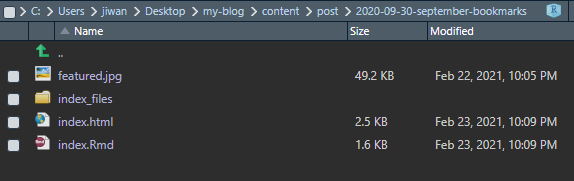

Hey there! It’s been a really long time since my last blog. I’ve just been hibernating through winter and getting priced out of the Ottawa housing market! ğŸ˜
Anyways, I re-did my blog. I was previously using the cocoa-eh Hugo theme, but when I tried to make a blog post earlier this month, it broke on me. This violates my “don’t fix it if it ain’t broke†code that I live by, so I initially tried to quick fix it, but couldn’t locate where the problem was coming from! So I just decided to bite the bullet and start fresh with a new theme. Anatole theme is what I’m currently using. It checks off a lot of the boxes for me:
I was debating between this, and hugo-academic that’s really popular with some of my favourite R users, like Julia Silge and Alison Hill. I especially like Alison’s Resume page, maybe I’ll make something like that down the road, but I just put mine in the “About†section for now. But the reason I chose anatole over the hugo-academic is the simplicity. The code base was a lot smaller, which makes it possible for me to actually dig in, when I want to change something.
This was my first time figuring out how to modify a hugo theme! It definitely took lots of time, but I learned a ton, and wanted to document what I’ve done! Remember my August-September webdev streak? It came in really handy 🚀🚀🚀🚀🚀
This was probably the area I actually changed structurally. Let’s talk about this.
The set-up of the image itself was already done by the creator of the theme, Alexander, and I just had to tweak how they were being displayed in two different pages. (front page preview, and in the post, at full size)
I didn’t change the actual look of the thumbnail, but had to do a lot of tweaking to actually bring in the picture. this is what it looked like initially:
I mostly had a problem with how the location of the image is read. The way the author had set this up, I had two options: I can either put all my thumbnail images in the static folder, and give the post YAML frontmatter the name of the file, or put it anywhere you want, and give it the full path to the file. (At least that’s how I interpreted it). What I wanted was to put the pictures in each post’s folder, and call just the picture’s name in the post YAML frontmatter. My YAML looks like this for this post:
What I generate by default using default.md archetype includes two things:
So I save all my thumbnail pictures in each post folder as “featured.jpg”, and fill out the artist tag. (Thank you all for the amazing copyrights free pictures!!) But yea I had no idea where to start. I just kept asking Google a bunch of variations of “how to set blogdown hugo thumbnail pictures”. I think I read just about all the blogdown github issues related to archetypes and frontmatter. When I started the blog, I did read up about the basics of Hugo, but that was a long long time ago, and I certainly didn’t intend to be digging around. The moment I started making real progress was when I searched the HTML class of the thumbnail image tag, .thumbnail, in the source repo in github, and came to this page.
This index.html looks like the HTML that generates the front page! I learned enough HTML to know that src="{{ .Params.thumbnail | relURL }}" is how it grabbed the image. But I had no idea what this weird language even was! (turns out it was go). After painful couple hours, this is what I came up with:
.RelPermalink gives me the directory of the post, like /post/2020-09-30-september-bookmarks/, where I have all that goes into a post, including the featured image.

.Params.thumbnail is just a YAML frontmatter whose name is “thumbnail”. If I just combine the two and tell the image src to grab /post/2020-09-30-september-bookmarks/featured.jpg, it’s c’est bon. That’s what printf %s%s does. (I’m literally concatenating two strings). In a similar manner, I have the alt-description of the picture as the shoutout to the artist on Unsplash.
Similarly, I wanted to experiment with how the in-page picture looked. Boy was I in for a pandora’s box. single.html generates individual posts.
First right off the bat, img.post-thumbnail isn’t wrapped in its own div! 😡😡😡

Call me old school, but I like images having their own divs, so I can fit them to the div, and modifying the div, rather than putting a naked img out there in the cruel world. This is my single.html:
Matter of fact, I wrapped that img div in another div, because I wanted to overlay the artist link oveer the image. I used CSS grid to do this. Btw, notice the same printf job I did to direct the image and the description. Anyways, here’s the CSS if you’re interested. Pretty basic stuff, thank you css-tricks.com 🙌🙌🙌🙌
Not related to the thumbnail, but notice the naked {{ .Content }} halfway down in the body? This literally places my texts in <p>’s at the same level as the div.post-title 🤦 Wrap that shit up son.
I’m sure there’s a reason for all these default settings, but I felt like changing them! The Thumbnail was the main structural thing really. I had to dig in deep to make the wrappers work. css is super tricky sometimes.
Blog’s still gonna need more work as I go, but I feel good enough about it to show it off again! Have a great day :)